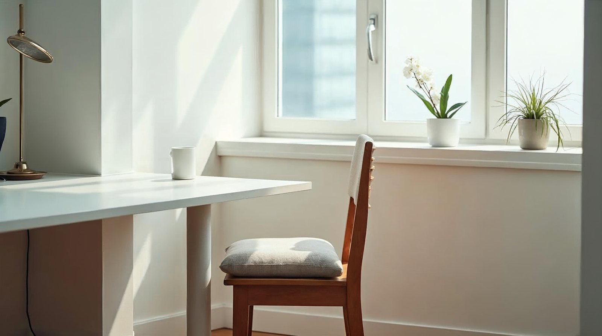
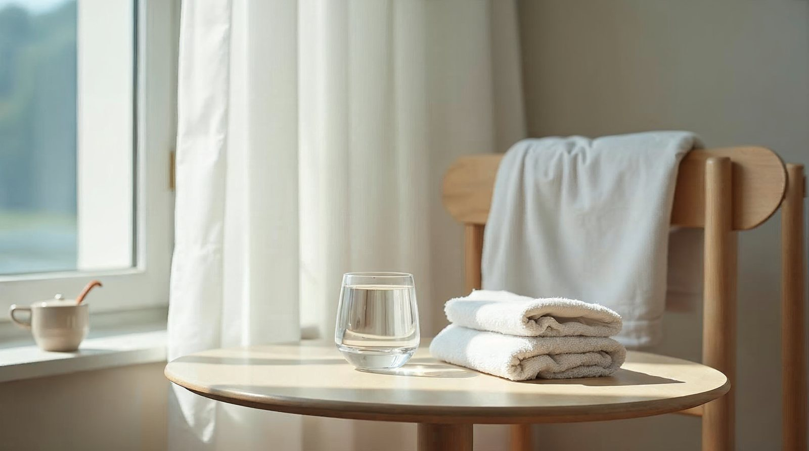
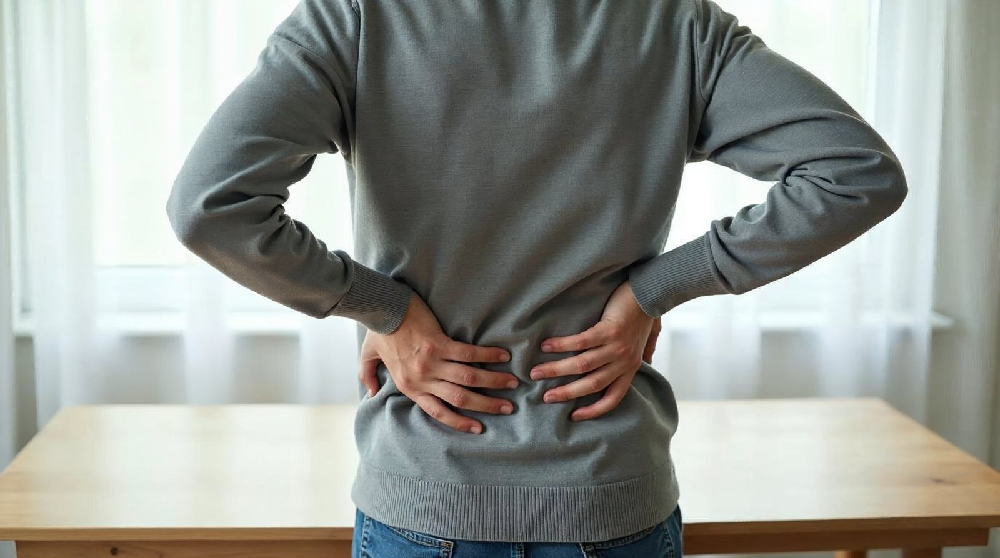
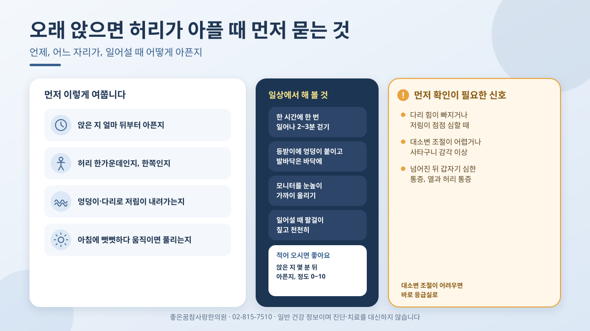

이종호 한의사 감수좋은꿈참사랑한의원 대표원장 (한의사 면허번호 19769)발행 2026-11-26 · 수정 2026-11-26
이 글의 차례
오후 네 시, 모니터 구석의 시계를 보니 점심을 먹고 들어와 한 번도 일어나지 않았습니다. 프린터 쪽으로 가려고 의자에서 몸을 일으키는데 허리가 한 번에 펴지지 않습니다. 책상 모서리를 짚고 엉거주춤 서 있다가, 몇 걸음 걷고 나서야 겨우 풀립니다.
진료실에서 이런 말씀을 자주 듣습니다. "다친 것도 아니고 그냥 앉아 있었을 뿐인데요." 무거운 걸 든 것도, 넘어진 것도 아니니 더 억울하고 답답하실 겁니다.
앉아 있는 것이 일인 분들께 앉아 있으면 아프다는 건 참 난감한 일입니다. 일을 그만둘 수도, 하루 종일 서 있을 수도 없으니까요. 그 사이에서 허리를 달래 가며 하루를 버텨 오셨을 마음을 먼저 헤아려 봅니다.
먼저 답부터 드리겠습니다. 오래 앉으면 허리가 아픈 분께 저는 세 가지를 먼저 여쭙습니다. 앉은 지 얼마 뒤부터 아픈지, 일어설 때 어떻게 아픈지, 엉덩이나 다리로 저림이 내려가는지입니다.
같은 허리 통증이라도 앉아 있을 때, 일어설 때, 누워 있을 때 아픈 모습이 다르고 그에 따라 살필 곳도 달라집니다. 다리 저림이 함께 있다면 먼저 확인할 것이 하나 더 생깁니다. 이 세 가지를 알고 오시면 첫 진료에서 이야기가 빨리 정리됩니다.
왜 오래 앉아 있으면 허리가 아플까요
사람은 서서 걷기 때문에 허리 아래쪽에 늘 체중이 실립니다. 허리는 원래 앞으로 살짝 휘어진 곡선을 가지고 있는데, 의자에 엉덩이를 앞으로 빼고 기대앉으면 이 곡선이 펴집니다. 그 자세가 길어지면 디스크와 둘레 근육에 부담이 쌓일 수 있습니다.
근육 쪽에서 보면 더 단순합니다. 같은 자세로 오래 앉아 있으면 허리 둘레 근육이 쉬지 못하고 계속 일을 합니다. 모니터가 낮거나 의자가 맞지 않아 허리가 둥글게 말린 채 몇 시간을 보내면, 지치는 것도 당연하지요.
그런데 이것만으로는 설명이 다 되지 않습니다. 똑같이 앉아 일했는데 어제는 괜찮고 오늘은 아픈 날이 있으니까요. 저는 이럴 때 그날의 자세보다, 그 자세를 견디던 몸의 여유가 줄어들었는지를 봅니다.
여유를 줄이는 것은 대개 생활 속에 있습니다. 몇 달 사이 늘어난 체중, 저녁마다 무거워지는 붓기, 자주 끊기는 잠과 쌓인 스트레스 같은 것들입니다. 배와 엉덩이 근육의 힘이 약해져도 허리 혼자 짐을 더 지게 됩니다.
활동량이 갑자기 늘거나 줄어든 시기에 통증이 시작되는 분도 많습니다. 정리하면 이런 이유들이 겹칩니다.
- 허리 곡선이 펴진 채 오래 앉는 자세
- 쉬지 못하고 지친 허리 둘레 근육
- 체중·잠·스트레스처럼 몸의 여유를 줄이는 생활
통증은 지워야 할 불이 아니라 읽어야 할 경고등입니다
제 차는 십오 년이 넘은 오래된 차입니다. 계기판에 경고등이 자꾸 들어와 정비소에 가면, 기계를 연결해 그 불을 지워 줍니다. 고치려면 손볼 데가 많다고 해서 저는 불만 지우고 다시 탑니다. 그러면 몇 달 뒤 그 불이 또 들어옵니다.
허리 통증도 닮은 데가 있습니다. 아프지 않게만 만들면 경고등을 지운 것과 비슷합니다. 불을 켠 이유가 그대로라면 언젠가 같은 자리에 불이 다시 들어올 수 있습니다. 차는 바꿀 수 있어도 허리는 바꿀 수 없지요.
저는 이런 통증을 허리가 "주인님, 제가 지금 디스크로 가고 있습니다" 하고 알려 주는 신호에 빗대기도 합니다. 모든 허리 통증이 디스크로 이어진다는 뜻은 아닙니다. 다만 앉아서 생긴 통증일수록 그날의 동작보다 그동안의 생활을 봐야 한다는 뜻입니다.
그래서 경고등은 지우기 전에 먼저 읽어야 합니다. 저는 네 가지를 여쭙습니다. 언제 켜지는지, 얼마나 자주 켜지는지, 한 번 켜지면 얼마나 가는지, 무엇을 하면 꺼지는지입니다.

앉을 때, 일어설 때, 아침과 저녁에 따라 다르게 봅니다
앉은 지 30분에서 한 시간쯤 지나 뻐근해진다면 근육이 지치고 허리 곡선이 펴진 시간을 먼저 떠올립니다. 이런 분은 일어나 몇 걸음 걸으면 풀리는 경우가 많아서, 걷고 나면 어떤지를 꼭 여쭙습니다.
의자에서 일어설 때 허리를 한 번에 펴기 어렵다면 굳은 정도와, 골반과 허리가 함께 움직이는 모습을 봅니다. 아침에 켜지는 불이라면 밤새 굳은 몸을, 저녁 무렵 켜지는 불이라면 하루 동안 쌓인 피로와 붓기를 먼저 생각합니다.
다만 아침마다 30분 넘게 뻣뻣하고 움직이면 오히려 풀리는 일이 몇 달째 이어진다면, 염증성 질환 같은 다른 원인이 없는지 병원 검사를 함께 권하기도 합니다.
엉덩이나 허벅지 뒤로 저림이 내려간다면 디스크 쪽 신호를 따로 살펴야 합니다. 어디까지 내려가는지, 다리에 힘이 빠지는지는 진료 때 직접 확인합니다.
MRI에서 디스크가 보인다는 말을 들으면 덜컥 겁부터 나실 겁니다. 디스크 변화는 나이가 들며 아프지 않은 분에게도 보일 수 있어서, 저는 사진만 보고 겁먹지 마시라고 자주 말씀드립니다.
사진에 보이는 모양보다 지금 어떤 동작에서 아프고 어떤 자세에서 편한지가 순서를 정합니다.
이런 분들을 진료실에서 자주 뵙습니다
특정한 누구의 이야기가 아니라, 앉아서 허리가 아파 오시는 분들에게서 자주 겹쳐 보이는 모습입니다. 지금 내 하루와 닮은 데가 있는지 떠올려 보셔도 좋겠습니다.
예를 들어 하루 종일 책상 앞에서 일하는 직장인이라면, 오후만 되면 허리가 묵직해지다가 퇴근 무렵에는 굳어 버립니다. 이런 분께는 의자와 모니터 높이, 그리고 몇 분마다 일어나는지부터 함께 봅니다. 한 시간마다 울리는 알림을 정해 두는 것도 방법입니다.
예를 들어 독서실에서 하루 대부분을 보내는 수험생이라면, 허리와 함께 종아리에 쥐가 자주 나기도 합니다. 쉬는 시간마다 2~3분 걷는 습관과 엉덩이를 등받이에 깊이 붙여 앉는 법을 먼저 정하고, 잠드는 시간과 식사 시간도 함께 여쭙습니다.
예를 들어 오래 운전한 뒤 차에서 내릴 때 허리를 바로 펴기 힘든 분이라면, 운전석에 엉덩이를 깊숙이 넣고 등받이를 너무 눕히지 않으며 허리 뒤에 작은 쿠션을 대 보시라고 말씀드립니다. 한두 시간마다 차를 세우고 내려서 걷는 계획도 함께 세웁니다.
예를 들어 아이를 돌보는 분은 의자에 앉을 틈은 없어도, 바닥에 쪼그려 앉거나 한쪽으로 기대앉는 시간이 깁니다. 이런 분께는 하루 중 아이를 안는 시간과 잠을 함께 살핍니다.
자주 하시는 오해, 조금 풀어 드릴게요
"허리가 아프면 누워서 쉬어야 하지 않나요?" 아주 아픈 날 잠시 쉬는 것은 괜찮습니다. 다만 하루 종일 누워 있기보다 아프지 않은 범위에서 조금씩 움직이는 편이 회복에 도움이 된다고 알려져 있습니다. 오래 누워만 있으면 근력이 떨어지고 더 뻣뻣해지기 쉽습니다.
"바른 자세로 앉으면 되지 않나요?" 아무리 좋은 자세도 오래 버티면 허리가 지칩니다. 꼿꼿하게 힘주어 세우기보다 허리 뒤에 작은 쿠션을 대어 원래 곡선을 받쳐 주는 편이 오래가고, 무엇보다 자세를 자주 바꾸는 것이 먼저입니다.
비싼 의자로 바꾸면 해결될 거라 기대하시는 분도 계십니다. 의자가 도움이 될 수는 있지만, 높이와 모니터 위치, 쉬는 간격이 맞지 않으면 차이가 크지 않을 수 있습니다. 근육만 풀면 된다는 생각도 비슷합니다. 관절과 인대, 신경, 자세 습관이 함께 얽혀 있는 경우가 많습니다.
아프지 않게 되면 다 끝났다고 여기기도 쉽습니다. 통증이 줄어든 것은 정말 반가운 일입니다. 그래도 경고등을 지운 것과 고친 것은 다릅니다. 앉는 시간과 습관이 그대로라면 비슷한 일이 다시 찾아올 수 있습니다.
그래서 저는 통증이 가라앉은 뒤에도 생활 이야기를 한 번 더 꺼냅니다. 듣기 편한 말은 아닐 수 있지만 미루지 않습니다. 진료실에서도 이렇게 말씀드립니다. "저는요, 다음에 와도 똑같이 얘기할 거예요."

먼저 이렇게 여쭙니다
처음 오시면 저는 이런 것부터 하나씩 여쭙습니다. 기억나지 않는 것은 비워 두셔도 괜찮습니다.
- 앉은 지 몇 분쯤 지나 아프기 시작하는지
- 일어설 때 허리를 바로 펴기 어려운지
- 엉덩이나 다리로 저림이 내려가는지
- 아픈 곳이 가운데인지, 한쪽인지
- 다리를 꼬거나 한쪽으로 기대앉는 습관이 있는지
- 요즘 잠과 체중, 붓기, 스트레스는 어떤지
허리가 아파 오셨는데 체중이나 잠을 여쭈면 의아해하십니다. 앞에서 말씀드린 몸의 여유를 보려는 질문입니다. 잠을 설친 날 더 아팠는지, 마음 쓸 일이 있던 주에 더 자주 아팠는지 같은 대답이 다음 순서를 정하는 데 꽤 쓸모가 있습니다.
허리가 눌린다고 표현하시는 분도 계십니다. 저는 그 말을 가볍게 넘기지 않고, 어디가 어떻게 눌리는지 손으로 직접 살펴봅니다. 굳은 정도는 말씀보다 몸이 먼저 알려 줄 때가 많습니다.
스스로 점검해 보세요
- 앉은 지 30분~1시간이 지나면 허리가 뻐근하다
- 의자에서 일어날 때 허리를 바로 펴기 어렵다
- 아침에 일어날 때 허리가 가장 뻣뻣하다
- 다리를 꼬거나 한쪽으로 기대앉는 습관이 있다
- 하루 걷는 시간이 30분이 안 된다
- 몇 달 사이 체중이 늘었거나 저녁이면 몸이 붓는다
- 통증 때문에 잠을 설치는 날이 있다
세 가지 넘게 해당된다면 아픈 자리만 볼 때는 아니라는 뜻일 수 있습니다. 엉덩이나 다리로 저림이 내려간다면 개수와 상관없이 진료 때 꼭 말씀해 주세요.

일상에서 먼저 해 볼 수 있는 것
거창한 운동보다 하루의 작은 습관부터 바꿔 보시길 권합니다.
- 30~50분 앉았다면 일어나 허리를 펴고 몇 걸음 걷기
- 엉덩이를 의자 깊숙이 넣고 허리 뒤에 작은 쿠션 대기
- 발바닥은 바닥에 대고, 다리는 꼬지 않기
- 모니터를 눈높이 가까이 올리기
- 일어설 때는 팔걸이를 짚고 천천히
- 아침에는 누운 채 무릎을 세워 좌우로 가볍게 흔든 뒤 일어나기
- 바로 누울 때 무릎 아래에 베개 받치기
운동은 아예 멈추기보다 강도를 낮추는 쪽을 권합니다. 출퇴근이나 장보기 같은 일상 걷기는 그대로 두고, 따로 하던 운동은 무게나 시간, 거리를 평소의 70% 정도로 줄여 보세요. 다음 날 불편이 늘지 않으면 조금씩 되돌리고, 늘면 그 동작은 잠시 쉽니다.
통증을 참으면서 하는 운동은 권하지 않습니다. 스쿼트를 하루에 이백 번씩 한다는 이야기를 들으면 참 열심이시다 싶으면서도 마음이 조금 아픕니다. 이어 갈 수 없는 강도라면 오래가지 못합니다. 일주일에 한 번 세게 하기보다 자주 약하게 하는 편을 권합니다.
찜질은 막 삐끗해 붓고 뜨거울 때는 차갑게, 오래된 뻐근함에는 따뜻하게 하는 것이 일반적인 기준입니다. 따뜻하게 한 뒤 시원하게 풀리면 지금 몸에 맞는 쪽이고, 쥐가 나거나 욱신거림이 늘면 멈추세요. 파스는 몇 시간 붙였다 떼고, 감각이 둔한 곳에는 찜질을 하지 않으며, 찜질기를 켠 채 잠들지 않습니다.
서서 일하는 책상이 있다면 앉았다 섰다를 번갈아 하는 데 쓰세요. 오래 서 있는 것도 허리에는 부담입니다. 서 있을 때는 한쪽 다리에만 체중을 싣지 않도록 낮은 받침에 발을 번갈아 올려 두면 한결 편합니다.
한의원에서 함께 살필 수 있는 경우
- 오래 앉았다 일어날 때 허리가 한 번에 펴지지 않는 경우
- 앉는 자세를 바꿔도 같은 자리가 되풀이해 아픈 경우
- 허리 통증과 함께 잠, 소화, 붓기가 흔들리는 경우
처음 오시면 언제부터, 어떤 동작에서, 어디가 아픈지를 먼저 듣습니다. 다른 병원에서 받은 검사 결과지나 MRI 판독지, 드시는 약 목록이 있으면 함께 가져와 주세요.
그다음 저는 양손을 내어 달라고 말씀드립니다. 처음 오신 모든 분께 맥을 짚으면서 잠은 어떤지, 식사와 소화는 편한지, 몸이 차지는 않은지, 대소변은 괜찮은지 여쭙습니다. 저는 모든 치료의 시작과 끝에 진맥이 있어야 한다고 말해 왔습니다.
이어서 서 있는 모습과 걷는 모습을 보고, 허리와 골반을 직접 움직여 보며 누르면 아픈 자리와 근력, 저림 같은 신경 증상을 확인합니다. 좌우 균형을 먼저 보고 앞뒤 곡선을 다음에 봅니다. 좌우가 기울어 있으면 앞뒤를 바로잡아도 쉽게 되돌아가는 경우가 있어서입니다.
필요하다고 판단되면 초음파로 근육과 인대 상태를 함께 봅니다. 다만 디스크와 신경은 초음파로 보기 어려워, 다리 저림이 심하면 영상 검사가 가능한 의료기관을 먼저 안내합니다. 몇 달 사이 체중 변화가 크다면 인바디로 체성분을 함께 보기도 합니다.
치료는 근육과 조직의 불편은 침과 약침으로, 자세와 정렬은 추나로 나누어 생각합니다. 대개 침을 먼저 놓고 추나를 한 뒤 물리치료로 마무리하며, 필요하면 체외충격파나 맥스톰, IS400 같은 장비를 이어서 씁니다.
교정하기 전과 뒤에는 팔다리 힘과 몸의 좌우 높이를 같은 방법으로 다시 확인합니다. 무엇이 달라졌는지 환자분도 함께 느껴 보시면 집에서 지킬 자세를 더 잘 기억하십니다.
추나요법의 건강보험 적용 여부와 조건은 방문 전 전화(02-815-7510)로 확인해 주세요. 귀가하시기 전에는 앉는 자세와 쉬는 간격을 함께 정해 드립니다.
몇 번 와야 하느냐는 질문도 많이 받습니다. 앉는 생활에서 생긴 통증은 그 생활이 얼마나 달라지느냐에 따라 길이가 달라져서, 처음부터 숫자를 약속하기보다 진료를 이어 가며 달라진 점을 보고 다음 계획을 정합니다.
치료 중에 아픈 곳이 반대쪽으로 옮겨 간 것 같다는 분도 계십니다. 한쪽이 많이 불편할 때는 다른 쪽 불편이 가려져 있다가, 한쪽이 줄면서 드러나는 경우가 있어 처음에 미리 말씀드립니다.
얼마나 지켜보고, 언제 상담하면 좋을까요
쉬는 간격과 앉는 자세를 바꾼 뒤 1~2주는 몇 분 앉으면 아프기 시작하는지를 적어 비교해 보세요. 바꾼 습관이 지금 몸에 맞는지 가늠하는 데 이만한 기록이 없습니다.
2주가 넘도록 통증이 줄지 않거나, 덜했다 심했다를 되풀이한다면 상담을 받아 보시길 권합니다. 꼭 2주를 채우실 필요는 없습니다. 일상이 불편하다면 그때가 상담하실 때입니다.
이렇게 기록해 오시면 상담이 쉬워집니다
- 하루 앉아 있는 시간과 앉은 지 몇 분 뒤 아픈지
- 아픈 위치(가운데, 한쪽)와 정도(0~10)
- 다리 저림이 있다면 어디까지 내려가는지
- 통증이 켜진 날과 꺼진 날을 달력에 표시한 것
- 드시는 약과 영양제, 검사 결과지
드시는 약은 봉투째 가져오시거나 사진으로 찍어 오셔도 됩니다. 콜레스테롤 약 가운데에는 근육통이 생길 수 있다고 알려진 약도 있어, 통증이 시작된 때와 약이 바뀐 때가 겹치는지 함께 봅니다.
겹친다고 해서 약을 바로 줄이지는 않습니다. 복용 중인 약은 처방한 의사와 상의 없이 줄이거나 끊지 않고, 필요하면 처방한 선생님께 여쭤볼 내용을 함께 정리해 드립니다.
이런 증상은 먼저 확인이 필요합니다
- 대소변을 보기 어렵거나 참기 어려워진 경우
- 엉덩이·사타구니·허벅지 안쪽 감각이 둔해진 경우
이런 신호가 있으면 한의원보다 가까운 병원이나 응급실을 먼저 찾으세요.
이런 신호가 없다면 너무 겁내지 않으셔도 됩니다. 경고등은 고장이 났다는 판정이 아니라, 지금 한 번 살펴보라는 알림이니까요.
마치며
앉아서 일하는 하루는 내가 고른 것이기도 하고, 고를 수 없는 것이기도 합니다. 허리가 아프다고 그 자리를 떠날 수 없는 분이 대부분이지요. 그래서 저는 의자를 버리라는 말 대신, 그 의자 위에서 허리가 덜 지치는 방법을 함께 찾고 싶습니다.
한 시간에 한 번 일어나는 일, 엉덩이를 깊숙이 넣고 앉는 일은 작아 보여도 하루하루 쌓이면 허리가 지는 짐이 달라집니다. 못 지킨 날이 있어도 스스로를 탓하지 마세요. 다음 날 다시 하시면 됩니다.
다음에 진료실에서 뵈면, 저는 앉은 지 몇 분쯤 지나 허리가 신호를 보내는지, 그리고 요즘 잠은 좀 주무시는지부터 여쭙겠습니다.
함께 읽으면 좋은 글

여쭙는 것
- 앉은 지 몇 분쯤 지나 아프기 시작하는지
- 일어설 때 허리를 바로 펴기 어려운지
- 엉덩이나 다리로 저림이 내려가는지
생활에서 해 볼 것
- 30~50분 앉았다면 일어나 허리를 펴고 몇 걸음 걷기
- 엉덩이를 의자 깊숙이 넣고 허리 뒤에 작은 쿠션 대기
- 발바닥은 바닥에 대고, 다리는 꼬지 않기
한의원에서 함께 살필 것
- 오래 앉았다 일어날 때 허리가 한 번에 펴지지 않는 경우
- 앉는 자세를 바꿔도 같은 자리가 되풀이해 아픈 경우
- 허리 통증과 함께 잠, 소화, 붓기가 흔들리는 경우
먼저 확인이 필요한 신호
- 대소변을 보기 어렵거나 참기 어려워진 경우
- 엉덩이·사타구니·허벅지 안쪽 감각이 둔해진 경우
한눈에 보는 표
| 구분 | 핵심 |
|---|---|
| 여쭙는 것 | 앉은 지 몇 분쯤 지나 아프기 시작하는지 일어설 때 허리를 바로 펴기 어려운지 |
| 생활에서 해 볼 것 | 30~50분 앉았다면 일어나 허리를 펴고 몇 걸음 걷기 엉덩이를 의자 깊숙이 넣고 허리 뒤에 작은 쿠션 대기 |
| 한의원에서 함께 살필 것 | 오래 앉았다 일어날 때 허리가 한 번에 펴지지 않는 경우 앉는 자세를 바꿔도 같은 자리가 되풀이해 아픈 경우 |
| 먼저 확인이 필요한 신호 | 대소변을 보기 어렵거나 참기 어려워진 경우 엉덩이·사타구니·허벅지 안쪽 감각이 둔해진 경우 |
자주 묻는 질문
오래 앉아서 아픈 허리는 한의원에서 어떻게 살피나요?
앉은 지 몇 분 뒤 아픈지, 일어설 때 어떤지, 다리 저림이 있는지를 먼저 여쭙고, 모든 분께 맥을 짚은 뒤 허리와 골반의 움직임을 직접 확인합니다. 필요하다고 판단될 때 초음파를 보고, 침·약침·추나·체외충격파 가운데 오늘 상태에 맞는 방법을 정합니다.
다리가 저리면 어떻게 하나요?
저림이 점점 심해지거나 다리에 힘이 빠지면 영상 검사가 가능한 의료기관 진료를 먼저 권합니다. 대소변이 어렵거나 엉덩이 둘레 감각이 둔해졌다면 가까운 응급실로 바로 가세요.
허리가 아플 때 운동은 쉬어야 하나요?
일상 걷기는 유지하고, 하던 운동은 강도를 70% 정도로 낮춰 보시길 권합니다. 다음 날 불편이 늘면 그 동작은 잠시 쉬고, 통증을 참으며 하는 운동은 권하지 않습니다.
아프지 않게 되면 치료를 그만해도 되나요?
통증이 가라앉은 것은 반가운 일입니다. 다만 앉는 시간이나 자세처럼 통증을 부른 생활이 그대로인지 한 번 더 살피고, 마무리 시점은 그때 함께 정합니다.
좋은꿈참사랑한의원은 재진 때 지난번 이야기부터 이어서 여쭙니다. 진료시간과 예약은 오시는 길에서 확인하세요.
어디서 상담받을 수 있나요?
좋은꿈참사랑한의원은 서울 동작구 만양로2길 2 신성빌딩 3층·5층(서울 동작구 상도동, 7호선 상도역 3번 출구 근처)에 있습니다. 한의사 3명(이종호 대표원장, 조영기 수석진료원장, 정원영 진료원장)이 진료합니다. 진료시간은 평일 09:30~20:00(점심 13:00~14:00), 토·일·공휴일 09:30~15:00이며, 방문 전 전화로 확인을 권합니다. 예약은 네이버 예약, 카카오톡 상담, 전화 02-815-7510로 받습니다.
이 글은 일반적인 건강 정보이며 개인의 진단이나 치료를 대신하지 않습니다. 증상이 있거나 복용 중인 약이 있다면 진료를 통해 확인하세요. 치료 효과는 개인마다 다를 수 있습니다.
작성 기준: 일반적으로 알려져 있는 건강 정보를 참고해 정리했습니다(대표원장 감수). 증상 기록은 1~2주 동안 하루 1회, 비슷한 시간에 적어 오시면 지난 상태와 비교하기 쉽습니다.